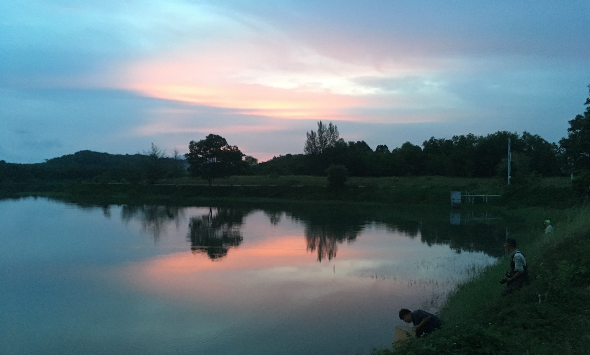

Publication

OLYMPUS E-M5 Mark-Ⅱ with M.ZUIKO DIGITAL 12 – 50 mm @ Distributing reservoir, Rayong, Thailand
2021
Tomojiri, D., Musikasinthorn, P., & Iwata, A. (2021). Utilization and economic importance of native and non-native freshwater fishes in the lowermost Chao Phraya River basin, Thailand. Wildlife and Human Society, in press. (journal article written in Japanese, English Abstract is available)
2020
Sai, A., Furusawa, T., Othman, M. Y., Zaini, W. F. Z. W., Tan, C. S. Y., Norzilan, N. I. M., & (2020). Sociocultural factors affecting muscularity among male college students in Malaysia. Heliyon, 6: e04414. (journal article) pdf
2019
Tomojiri, D., Musikasinthorn, P., & Iwata, A. (2019). Food habits of three non-native cichlid fishes in the lowermost Chao Phraya River basin, Thailand. Journal of Freshwater Ecology, 34(1): 419-432. (journal article) pdf
2018
Sai, A., Othman, M. Y., Zaini, W. F. Z. W., Tan, C. S. Y., Norzilan, N. I. M., , & Furusawa, T. (2018). Factors affecting body image perceptions of female college students in urban Malaysia. Obesity Medicine, 11: 13-19. (journal article)
2017
Tomojiri, D. (2017). Biodiversity as seen from the relationship between people and fish in Thailand. Asian and African Area Studies, 17(1): 149-152. (journal note written in Japanese)